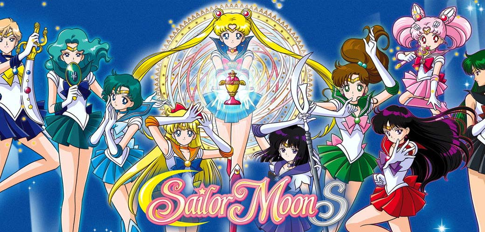
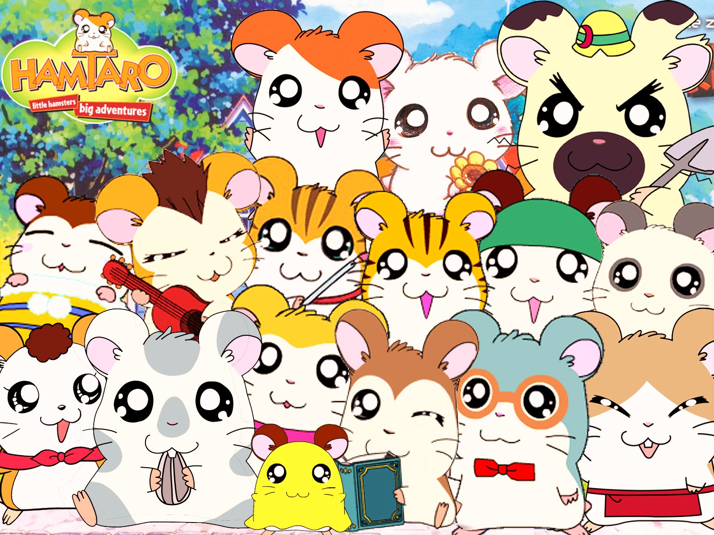
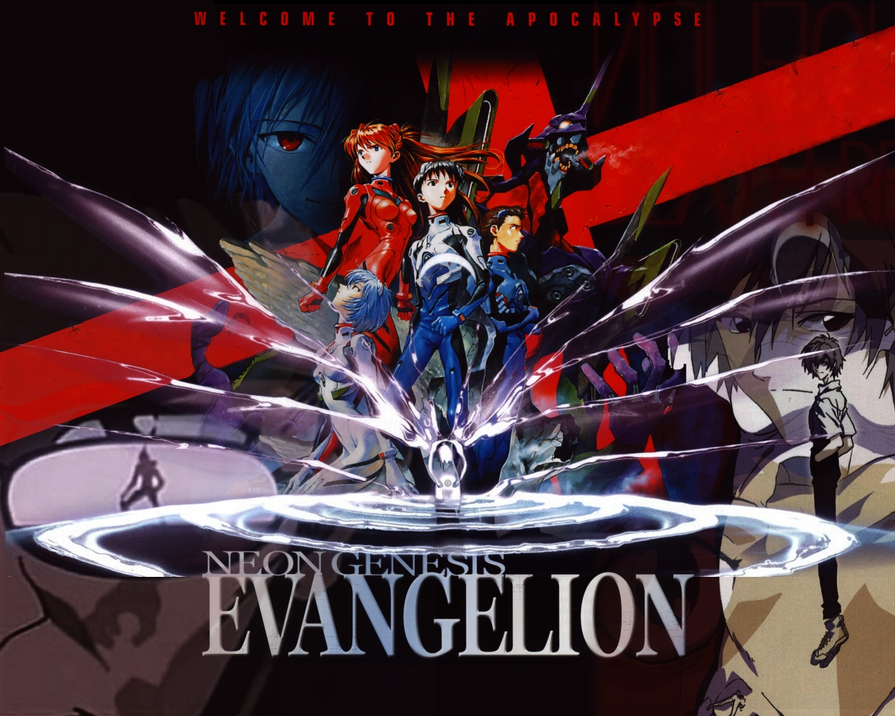
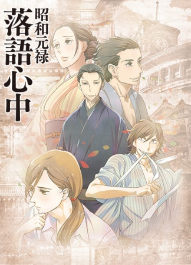

|  | Why i like it?In my case, i really love anime, i enjoy watching and reading manga. I can spend an entire day only watching a good anime and reading a lot of charapters of manga. I like that Anime are not just only cartoon for kids, 'cause there are a lot of gender that kids can not watching. Also, sometimes, anime can change your persoanlity and way of thinking. There are good animes that they leave you a teaching.On the other hand, you have to know to find that animes are good, and to be good I mean to have good story, good plot, good design, animation (this depends on the year of the anime).There are so many genres of anime that you can not count on your fingers. I will leave a table where I will put some genres that might interest you and animes of the genre: |
| Kodomo  |
In Japanese literally like "child". Anime focused on children. |
|
Shōnen |
In Japanese literally as "boy" or "teenager." Anime focused on the guys. |
|
| Shōjo |
In Japanese literally like "girl". Anime focused on the girls. |
|
| Seinen  |
In Japanese literally as "young man". Encourage your target audience towards young people and adults. |
|
| Josei  | From the Japanese "woman". Encourage target audience towards young and adult women |
|